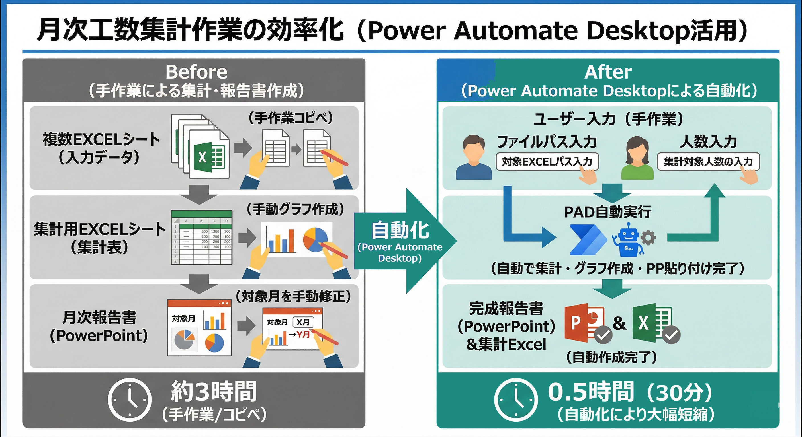
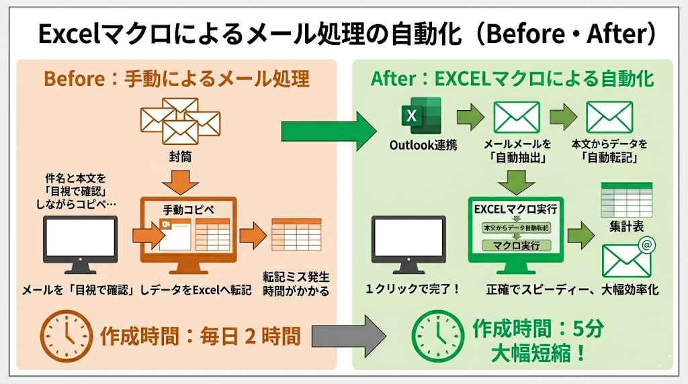
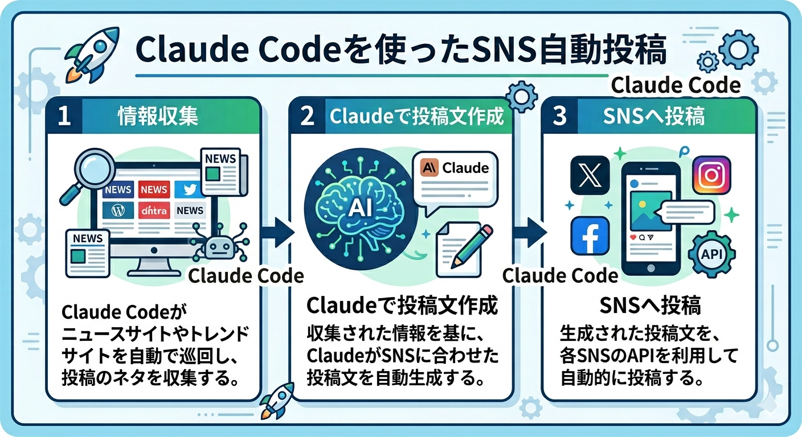

AI × RPA Business Consultant
AIとRPAで、現場の「非効率」を終わらせる。
導入から定着まで完遂する
実務家プロジェクトマネージャー
「ツールの提案」だけで終わるコンサルタントではありません。PMP®認定資格に基づく確かな進行管理と、最新AI・RPAの実装力を掛け合わせ、御社の業務プロセスを根本から再構築します。
Works & Cases
解決できる課題 / 過去の事例
バックオフィスの定型作業から、最新AIエージェントの活用、クリエイティブ支援まで。 幅広い領域で業務改善を実現してきた実績をご覧ください。
① バックオフィス・定型業務の自動化（RPA / マクロ）

RPA
メール監視・自動応答システム
受信メールを自動分類・振り分けし、定型問い合わせには即時自動返信。対応漏れゼロ・工数70%削減を実現。

Excel Macro
Excelマクロ自動化
複数シートにまたがる集計・フォーマット変換をワンクリック化。属人化していた作業を誰でも実行できる仕組みに刷新。
② 最新AIエージェントによる業務リプレイス

AI Agent / MANUS
MANUS活用・業界ニュース自動収集
AIエージェント「MANUS」を活用し、業界ニュースを毎朝自動収集・要約してレポート配信。情報収集工数をほぼゼロに。

AI Agent / Claude
Claude活用・SNS運用自動化
Claudeを活用してSNS投稿文を自動生成・スケジューリング。カレンダーUIと連動した自動投稿フローを構築し運用工数を大幅削減。
③ AIクリエイティブ・マーケティング支援


AI Video / Veo 3
企業CM・コンセプトムービー制作
Veo 3等の最新AI動画生成ツールを活用し、プロクオリティの企業CMをローコストで制作。AI駆動フローで制作期間を大幅短縮。
Photo
About
中澤 淳
ITプロジェクトマネージャー / 業務改善コンサルタント
PMP® 認定
NECグループ出身
最大45名規模PJ統括
大手ITグループ（NECグループ）にて最大45名規模のプロジェクトを統括。PMP®認定資格を保有する実績豊富なプロジェクトマネージャー。 現在はAI×RPAを活用した業務改善コンサルタントとして、中小企業の経営課題を解決。自らAI/RPAを実装し、現場スタッフが使いこなせるまで泥臭く伴走するスタンスが強みです。
「提案だけ」では終わらない。実装・定着まで一気通貫で担当
PMP®に基づくスケジュール・品質管理で、確実にプロジェクトを完遂
最新AI（Claude / MANUS / Veo 3等）とRPAを常に自ら実装・検証
経営層と現場の両面から課題を可視化し、ROIを明確化
How We Work
プロジェクト進行フロー
PMP®の知見に基づく4ステップで、「現状把握」から「現場への定着」まで確実に完遂します。
As-Is 分析 現状把握
現場リサーチと課題抽出——経営層と現場の両面から真のボトルネックを可視化。数値化できる「非効率」を洗い出します。
To-Be 設計 ロードマップ策定
自動化・AI導入設計——予算とフェーズに合わせたロードマップを策定。どの業務をいつ・どのように自動化するかを明確に定義します。
Execution 実行 PJ実装
PMとしてスケジュールと品質を徹底管理。AI・RPAの実装から動作確認まで、一切を責任をもって遂行します。
Adoption 定着 現場伴走
現場への定着支援——現場スタッフが自走できるまで徹底伴走。マニュアル整備・研修対応も含め、「使われ続けるシステム」を目指します。
Free Consultation
自社業務のAI・RPA化
自社業務のAI・RPA化
無料診断（オンライン60分）
どの業務がAI・RPAで自動化できるか明確になる
工数削減のポテンシャル（ROI）を白黒はっきりさせる
完全無料・オンライン60分・押し売り一切なし
※ 送信後、2営業日以内にメールにてご連絡いたします。